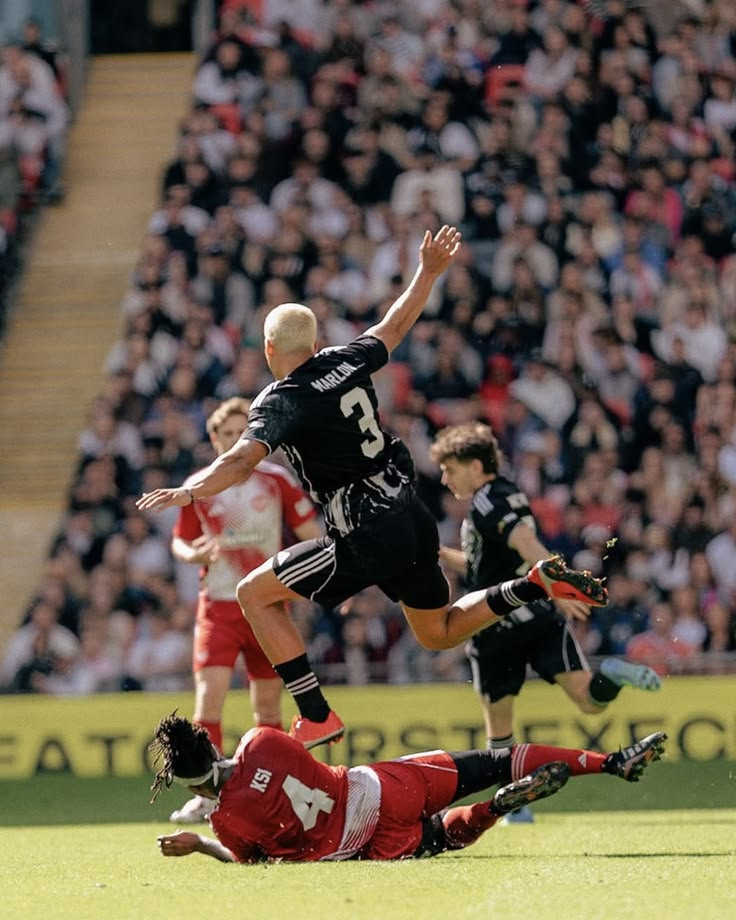
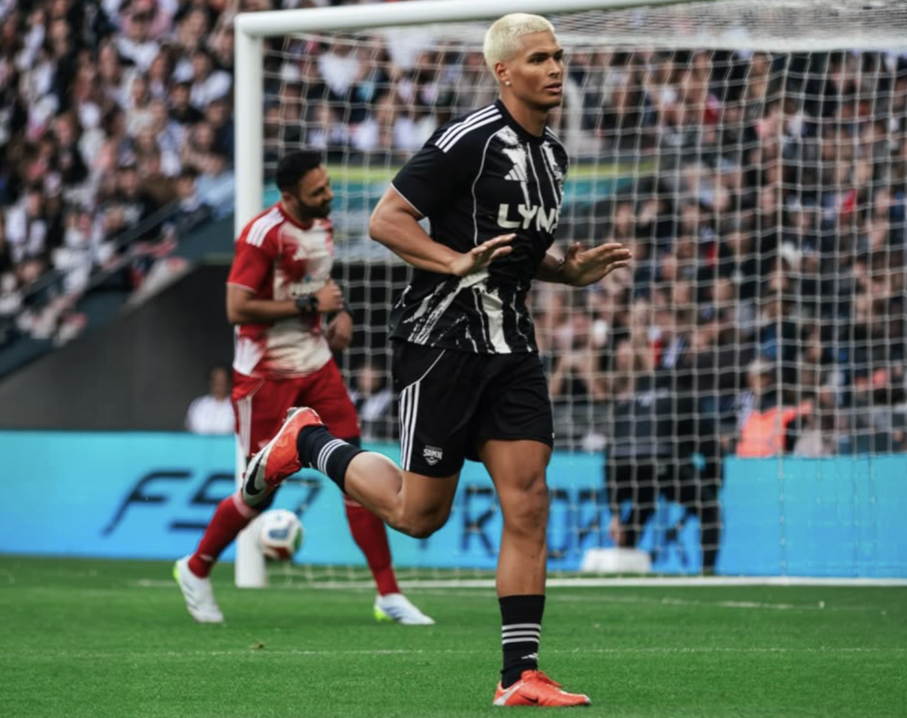

Sidemen Charity Match 2026
The Sidemen Charity Match is a huge annual football event created by the Sidemen. A British YouTube group made up of KSI, Miniminter, Zerkaa, Behzinga, TBJZL, Vikkstar123, and W2S. The event brings together YouTubers, streamers, influencers, and online creators to play a football match in front of thousands of fans while raising money for charity. The 2026 match took place on April 18, 2026, at Wembley Stadium in London and marked the 10-year anniversary of the event.
Over the years, the charity match has evolved from a simple YouTube event into a global phenomenon that blends sports, entertainment, and internet culture. Each year, the event grows larger, attracting bigger creators, larger audiences, and raising even more money for charity. The 2026 Sidemen Charity Match was especially significant because it celebrated the event’s 10-year anniversary and became one of the most talked-about online events of the year. From the packed Wembley Stadium crowd to the record-breaking donations and star-studded lineup, the match showcased how influential online communities have become both on and off the internet.

Traditionally, the Sidemen Charity Match featured all seven members of the Sidemen playing together on Sidemen FC against a team called the YouTube All-Stars. However, for the first time in the event’s history, the 2026 match split the Sidemen between both teams, creating a new level of competition and excitement for fans. Some members, including KSI, Miniminter, and Behzinga, played for the YouTube All-Stars, while others such as Zerkaa, Vikkstar123, W2S and TBJZL remained on Sidemen FC. Both teams included a mix of creators from around the world, ranging from longtime UK YouTubers like ChrisMD, ArthurTV, and AngryGinge to popular American streamers and creators such as Marlon, Stable Ronaldo, Jynxzi, and Sketch. Many of the players are close friends who collaborate online regularly, which made the match feel both competitive and entertaining while bringing together different online communities in one event.
The 2026 Sidemen Charity Match was one of the most exciting and entertaining matches in the event’s history. Held at Wembley Stadium in front of nearly 90,000 fans, the atmosphere felt more like a mix between a professional football game, a live concert, and a giant YouTube event. Fans filled the stadium wearing team jerseys, cheering for their favorite creators, and reacting to funny moments, big goals, and celebrations throughout the game. The match itself was fast-paced and chaotic, ending in an incredible 10–10 draw before the YouTube All-Stars won on penalties. Millions of viewers also watched online, helping the event become one of the most talked-about moments on social media. Even though the game was created for entertainment, the competitive energy between the teams and the excitement from the crowd made it feel like a real major sporting event.

The Sidemen Charity Match is loved by fans because it combines sports, entertainment, and internet culture into one massive event while also supporting important causes. Viewers enjoy seeing their favorite YouTubers and streamers compete in real life, especially because many of the players are not professional footballers, which leads to funny moments, unexpected highlights, and entertaining gameplay. At the same time, the event has a meaningful purpose beyond entertainment, as all proceeds go toward charity. The 2026 Sidemen Charity Match raised a record-breaking more than £6.2 million for charity, making it the most successful event in the match’s history. The combination of humor, competition, celebrity creators, and charitable impact is what continues to make the Sidemen Charity Match one of the biggest online events in the world.